本文章將介紹用手機 GoCoder 串流 wowza
首先手機先下載 GoCoder
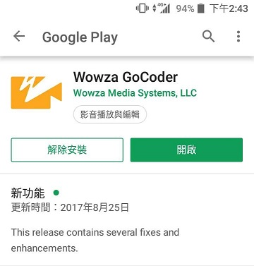
下圖為開啟畫面
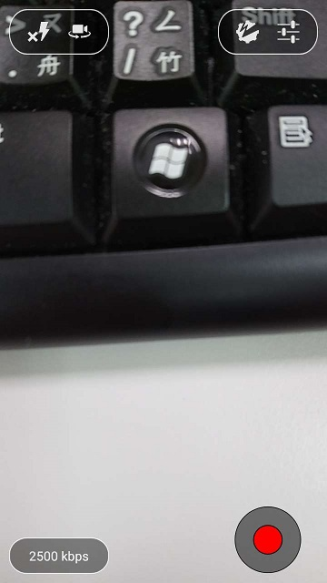
點擊右上做設定 ( 串流 wowza engine 只需要設定 Wowza Stream Engine )
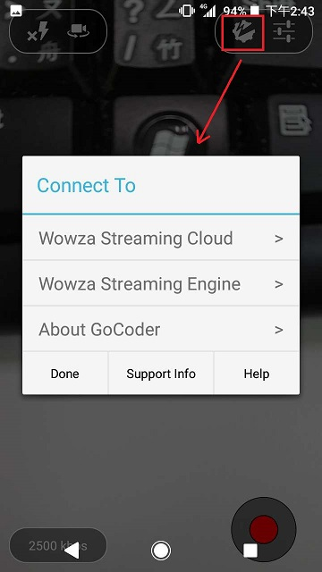
進入 wowza web → Source ( Live )，點擊 wowza GoCoder 裡面有一些參數，除了 IP ( 需要輸入外網 IP ) 其他可以對照輸入
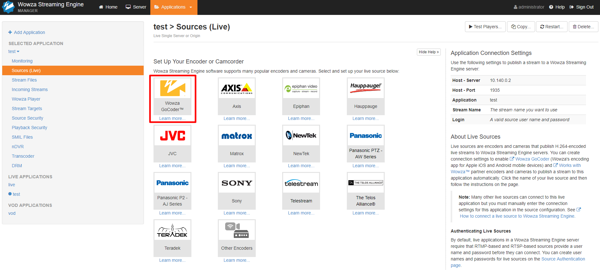
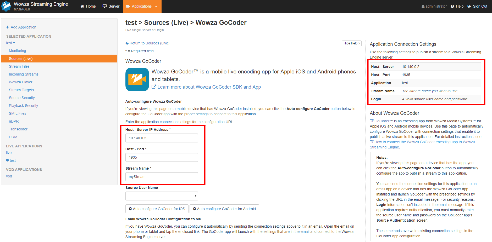
點擊 Wowza Stream Engine 會出現3個需要設定選項
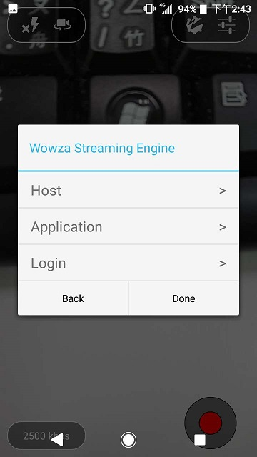
設定 Host：輸入外網 IP，Port：1935 ( wowza 預設串流 port )
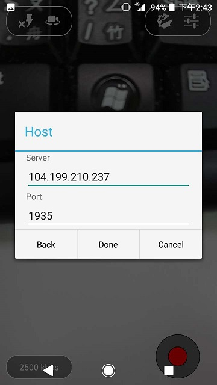
設定 Application：wowza live application name，Stream Name：GoCoder 預設都是 myStream ( 更改後 Incoming Streams 會顯示更改後名稱，PS.同樣名稱二支手機會互搶 )
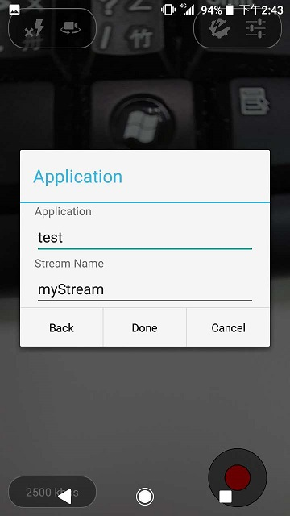
手機 GoCoder Source Authentication 要到 wowza Server → Source Authentication → Add Source 新增 Source
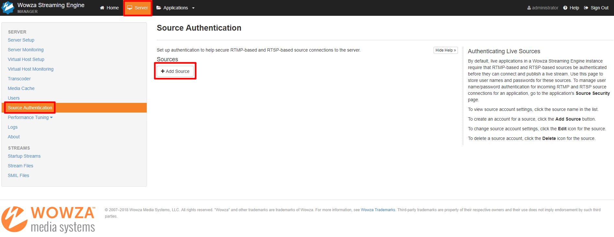
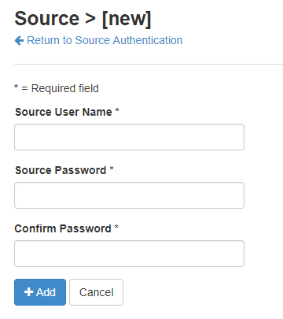
設定 Source Authentication：wowza 所設定的 Source Authentication
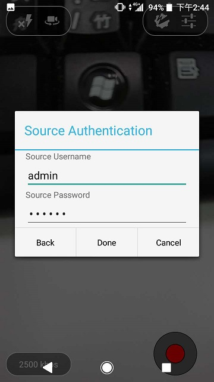
點擊右下紅點開始串流
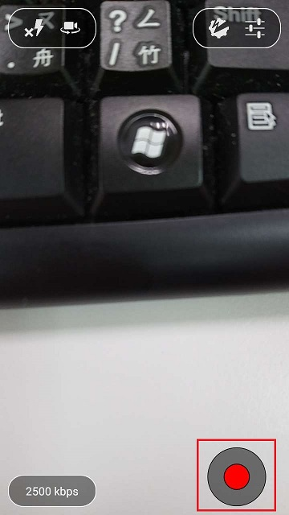
串流後畫面如下圖 ( 一些 GoCoder 其他設定有空會再做文章介紹 )
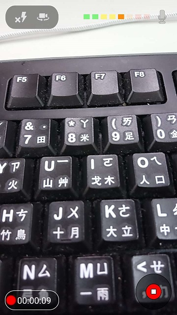
可以到 Inconing Streams 會發現串流正在在執行 ( 使用 GoCoder 的方式是不會有 Stream Files )
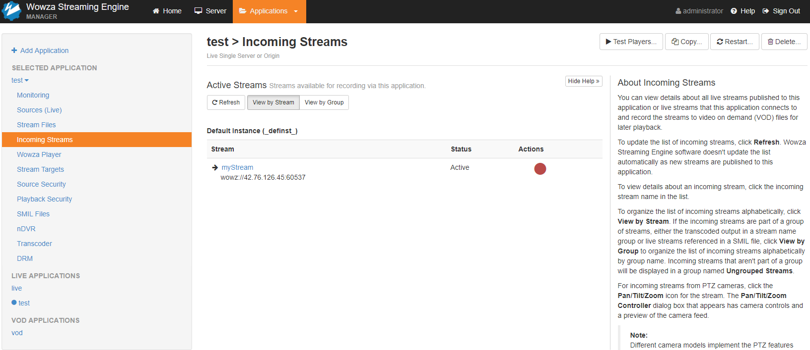
設定完後做測試，打開 VLC 輸入串流網址
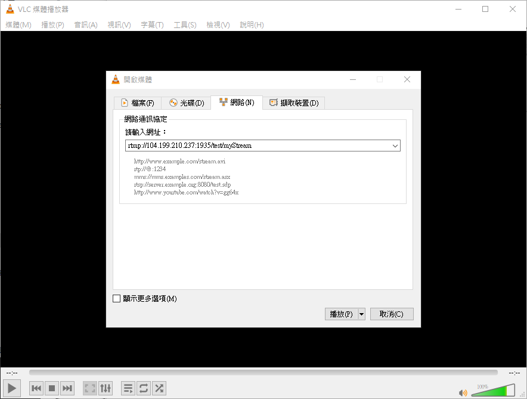
下圖有畫面就是成功了
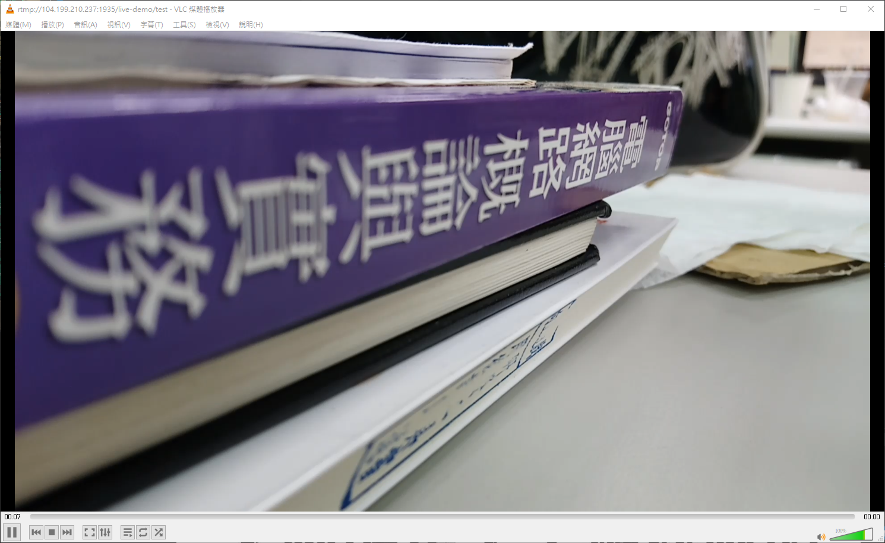